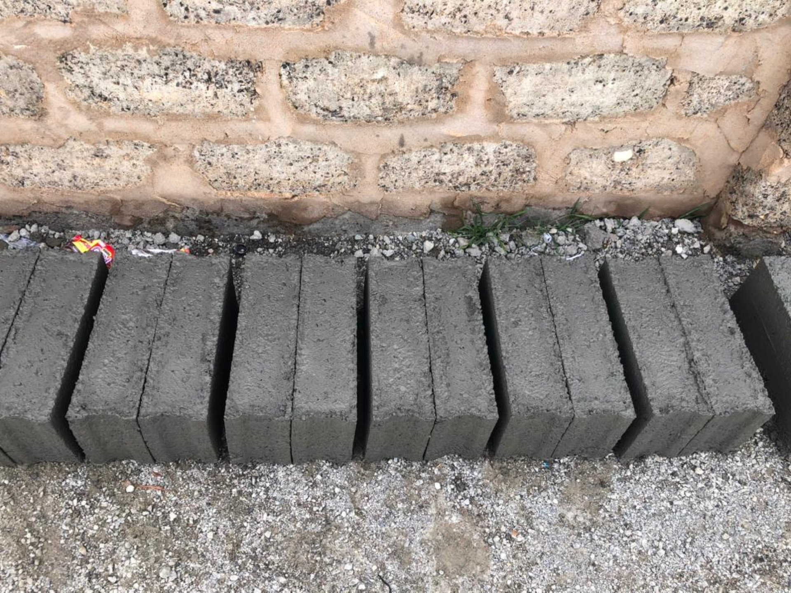
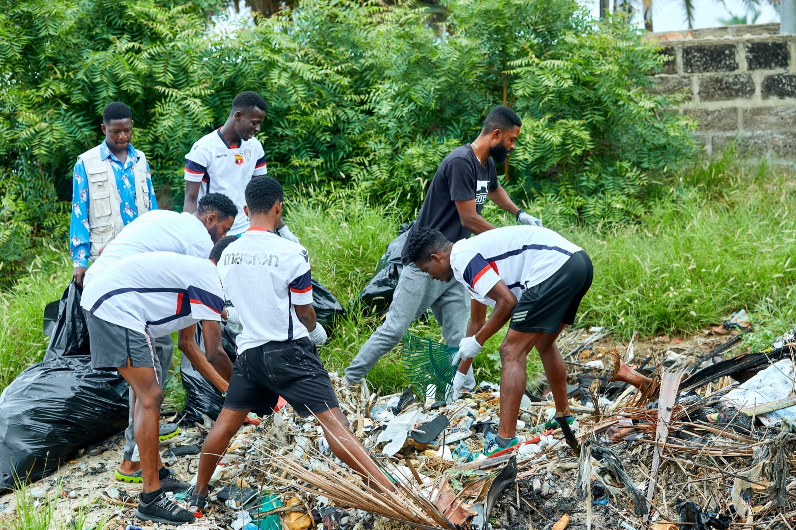
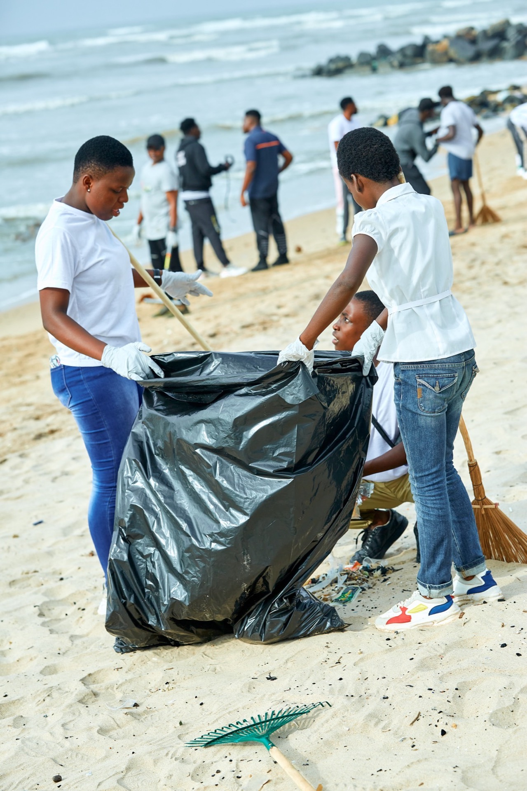
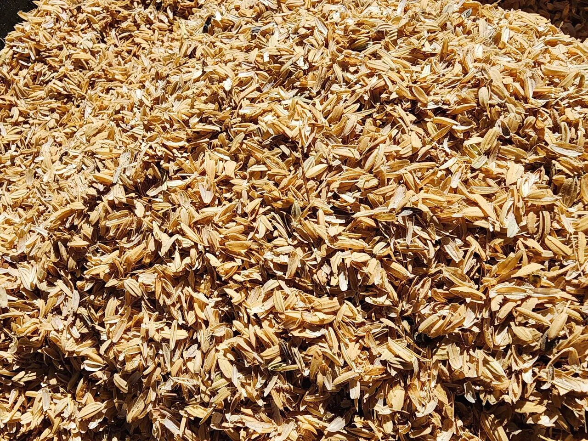
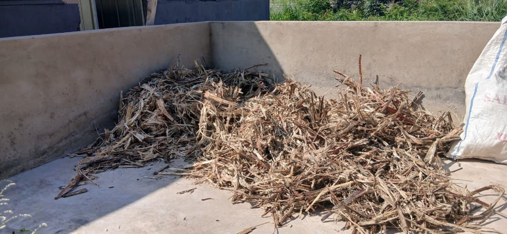

Material 01
Recycled PET flake
Post-consumer bottles, shredded on site. Replaces part of the traditional aggregate rather than being sold on as a raw commodity.
 Bottle Builders
Bottle Builders
Sheet A-02 / Section through the lifecycle
Post-consumer plastic passes through three phases. Every one of them can go two ways, and the difference between them is the whole company.
 Collected plastic, awaiting processing
Collected plastic, awaiting processing
The same three phases, run two ways. On the left is what happens to most of the world's plastic. On the right is what happens to ours.
Plastic that nobody collects goes to landfill or is burned in the open. Open burning releases millions of tons of CO2 every year, plus the dioxins and particulates breathed by whoever lives nearest to it.
Even where waste is collected by traditional recycling organisations, it moves through middlemen who set the buying price and keep the margin. The people doing the collecting are informal pickers, often impoverished women and children, and they absorb the difference.
Households, schools and businesses book a pickup in the GREENCO app and are paid directly for what they hand over. No middleman stands between the person who collected the plastic and the facility that processes it.

Sorting is done by hand. Once a bottle is crushed and its label is gone, PET, PVC and HDPE look nearly identical, so misidentified polymer ends up in the wrong bale. Food residue, adhesives and multilayer packaging contaminate the rest.
A contaminated bale is downgraded or rejected outright. Because nothing about the batch is written down, there is no way to trace which day, which source or which line the fault came from, so the same fault repeats.
KATAROS logs intake, inventory, production and dispatch in real time across both our own facility and partner EZOV Environmental Services.
When a batch underperforms we trace it back to the day it arrived, the source that sent it and the line that ran it. That record is what makes a formulation repeatable instead of lucky.

Most recycling organisations stop at flake or pellet and sell it on. Everything the material is eventually worth is added by whoever buys it and turns it into a product.
That leaves the recycler holding a raw commodity, taking whatever price the market sets that month and waiting on manufacturers to decide what the output is worth.
We carry the material all the way to a finished product. Recycled PET flake and plant biomass ash go into concrete masonry units made in house.
Blending recycled flake and biomass ash into the aggregate raises the compressive strength of the block. Taking that formulation to certified structural grade is what the plant is working on now.

Plastic waste is a global failure of infrastructure, not a local one. These are the conditions the company was built to work against.
Roughly a tenth of the 400 million tons of plastic waste generated worldwide each year is recycled. The rest is treated as rubbish rather than as feedstock.
In the markets we operate in, under 2% of plastic waste is recycled each year. The rest is burned in the open or dumped, which is the norm across much of the world.
Of the informal waste pickers where we operate are women. Worldwide, informal collection carries the labour of recycling and sees the smallest share of its value.
Five steps from a bottle somebody finished with to a block going out to a site.
Pickups booked in GREENCO, paid directly to households, pickers and businesses.
Bottles are shredded into flake, with every intake logged in KATAROS.
Flake is combined with plant biomass ash from rice husk and sugarcane bagasse.
The mixture is pressed into concrete masonry units and cured.
Blocks go out to the construction industry as a finished product.
Waste streams that would otherwise be burned, blended into the aggregate of an ordinary concrete masonry unit.

Post-consumer bottles, shredded on site. Replaces part of the traditional aggregate rather than being sold on as a raw commodity.

A farming residue usually burned off as waste. As ash it works with the cement rather than sitting inertly in the mix.

The fibre left after cane is milled. Another agricultural residue with nowhere useful to go, brought into the formulation.
Book a pickup in GREENCO, or talk to us about a whole waste stream.